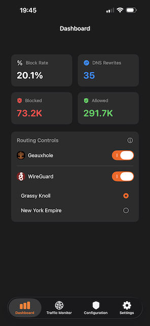
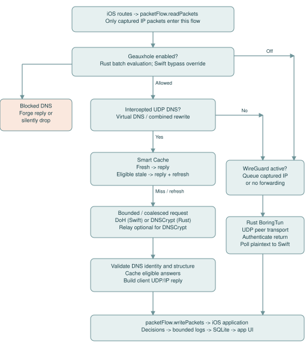

Filter on your device
Use blocklists, custom rules and bypass domains to shape DNS filtering.
INDEPENDENTLY BUILT · IN BETA
Your network. Your rules. Your privacy.
DNS filtering, encrypted DNS and your own WireGuard connection, together in one iOS app. Choose the tools you need and keep control of your configuration.
Testing and feedback are welcome. Financial support is always optional.
Use blocklists, custom rules and bypass domains to shape DNS filtering.
Configure DoH or DNSCrypt, with optional anonymized DNSCrypt relays.
Use filtering, WireGuard, or both together with your own profile.

Geaux combines networking tools while keeping DNS rule evaluation on your device. Your chosen DNS providers and WireGuard server still handle the traffic you send to them. Support features add no analytics and never send your local request history to the developer.
Read the privacy policyGeaux is actively being developed and tested. The current beta includes configurable relay bypass domains, local caching, request status details and compact settings screens. These are current capabilities, not a dated release history or a promise of bug-free networking.
THE NEXT MILESTONE
Geaux is currently distributed through TestFlight. Apple’s VPN app guidelines require organization enrollment. The next funding milestone is forming Geaux LLC in Texas, followed by organization enrollment and App Store submission.
The current total has not been published.
The formation goal covers the state filing milestone. Other expenses and Apple’s review remain separate; contributions do not guarantee a release date or approval.
Support GeauxOpens Buy Me a Coffee. No features or beta access are unlocked by contributing.
Contributions help cover direct project expenses and continued development, testing and maintenance.
Support is a voluntary contribution to an independent project, not a charitable donation.
You’re helping shape Geaux before its public App Store release. Share feedback on stability, networking behavior and usability, report issues, discuss Geaux and follow development. No payment is required.
Join the Discord communityRecognition is optional. Only explicitly approved display names will appear here; email addresses and payment details are never published.
Want to be recognized after contributing? Contact the developer with the display name you’d like to share. Anonymous support is just as welcome.
In the app, open Settings → Support Geaux for the launch milestone, community links and the option to hide the dashboard support card. Dismissing that card is permanent unless you explicitly re-enable it in Settings.
Browse the user guide or download the user guide PDF and technical reference PDF.
User Guide / 01
Geaux combines an on-device DNS filter (Geauxhole) with a WireGuard client. You can use either service independently or enable both. This guide describes the supplied source snapshot dated 14 September 2026.
Open Configure > DNS Settings and confirm the selected resolver. The default configuration selects Cloudflare DoH and includes Quad9 as another saved resolver. Open Dashboard and enable Geauxhole. Accept the iOS VPN configuration permission if prompted, wait for the connection status, then open a website and inspect Traffic.
| Geauxhole | WireGuard | What happens |
|---|---|---|
| Off | Off | Protection is stopped. |
| On | Off | DNS-only: selected system DNS goes to the local filter; ordinary application traffic uses the normal connection. |
| Off | On | WireGuard-only: profile routes apply; Geauxhole rules and Smart Cache are not used. |
| On | On | Combined: intercepted DNS is filtered locally; other captured traffic goes to WireGuard. |
Obtain a valid single-peer configuration from your VPN provider or server administrator. In Configure > WireGuard Profiles, create a profile, import from Clipboard or enter the fields, save it, and select it as active. Enable WireGuard on Dashboard. Leave Geauxhole enabled if you want filtering too.
AllowedIPs determines which IP destinations enter WireGuard. A profile containing 0.0.0.0/0 and ::/0 requests both IPv4 and IPv6 default routes. A narrower profile is split routing: do not assume every connection is protected. DNS-only mode cannot capture arbitrary hardcoded DNS destinations.
Confirm the Dashboard switches and connection status, then test actual browsing. A VPN icon or connected label alone does not prove the resolver or remote WireGuard server is reachable.
Source: DashboardView.swift; GeauxCore/GeauxConfig.swift; GeauxExtension/PacketTunnelProvider.swift: applyNetworkSettings
User Guide / 02
The four main areas separate connection controls, recent activity, configuration, and device preferences.
| Area | Use it for |
|---|---|
| Dashboard | Turn Geauxhole and WireGuard on or off, select the active WireGuard profile, and inspect request and blocking totals. |
| Traffic | Search and filter recent records, open grouped request details, and create rules from a domain. |
| Configure | Custom Rules, Bypass Domains, Blocklists, DNS Settings, WireGuard Profiles, Advanced WireGuard, and the raw configuration editor. |
| Settings | General preferences, appearance, Diagnostics, Known Bugs, About, and Danger Zone. |
Many switches save automatically. Editors and Advanced WireGuard have a Save action. Rule edits may show a processing/synchronization overlay: wait for completion. A displayed configuration error means the requested update may not be active.
Ordinary rule and DNS policy updates use a configuration reload. Mode, active WireGuard profile, profile fields, or pacing changes can rebuild the WireGuard engine and interrupt traffic briefly. Changing the anon-relay bypass list clears the DNS cache and resets the resolver without rebuilding the WireGuard tunnel.
Settings > Appearance offers Orange (default, #FF5E00), Purple (#8E399C), and Olive (#454B1B). The choice updates secondary accents, tree artwork, and the Home Screen icon where supported. iOS may show an icon-change notice. Appearance is stored separately from network configuration and does not change filtering.
Defaults in this snapshot are DNS-only routing, Force DNS Rewrite off, a one-hour TTL cap, High-Entropy Domains off, Hide Local Discovery on, and System Logging off. Existing saved configurations can differ.
Source: ContentView.swift; ConfigurationView.swift; SettingsView.swift; Theme.swift; GeauxCore/GeauxConfig.swift; GeauxExtension/PacketTunnelProvider.swift: handleAppMessage
User Guide / 03
Use the smallest matching scope that fixes the problem. Filtering bypass and anon-relay bypass solve different problems.
| Control | Meaning and interaction |
|---|---|
| Custom Rules | Assign Allow, Reject, Reject Drop, or Reject No Drop to an exact domain or domain family. An Allow match skips the entropy heuristic, but still uses the normal DNS resolver path. |
| Bypass Domains | Override DNS filtering for a matching domain. DNS resolution still occurs; this does not create an IP route around WireGuard. |
| Anon Relay Bypass | Keep DNSCrypt encryption but skip its relay for a domain and its subdomains. Filtering still applies. Configure under DNS Settings when an active DNSCrypt relay is in use. |
| Blocklists | Download supported domain lists and apply the selected action to enabled subscriptions. Disabled subscriptions are not active rules. |
example.com is exact. *.example.com and ||example.com^ represent the domain family, including example.com itself and its subdomains. Do not paste a full URL or path. For example, bypassing example.com alone will not bypass ads.example.com; choose family scope when needed.
Reject and Reject No Drop currently both produce an NXDOMAIN-style DNS block reply when the reply fits the implementation buffer. Their recorded action labels remain different. Reject Drop sends no reply, so an app may wait or retry. Allow continues resolution; it is not a guarantee that the upstream will answer.
Open Configure > Blocklists, paste a text-list URL, choose Matching action, and tap Add Blocklist. The initial default is https://small.oisd.nl with Reject No Drop. The add form initially selects Reject. Tap a subscription to edit it, or use its switch to enable or disable it.
Choose Daily, Every 2 Days, Every 5 Days, Weekly, or Custom days. The default interval is one day; iOS lifecycle and app activity affect actual update opportunities. Supported input includes domain lines, wildcard/domain-family entries, and common hosts-file lines. This is not a complete browser Adblock engine: exception syntax (@@), URL paths, and $ modifiers are unsupported.
Source: CustomRulesView.swift; BypassDomainsView.swift; DomainBlocklistsView.swift; DNSSettingsView.swift; GeauxCore/DomainRuleCanonicalizer.swift; geaux-rust/src/lib.rs
User Guide / 04
Configure > DNS Settings selects the resolver that Geauxhole uses for allowed intercepted queries. Saved servers are choices; the code selects one active server rather than racing the whole list.
Add a descriptive name, select DNS-over-HTTPS, and enter the provider's HTTPS DNS endpoint. Save and select the server. A plain HTTP URL is not accepted. The resolver must return DNS wire-format responses; an ordinary website URL is not a DNS endpoint.
Add a resolver with Protocol set to DNSCrypt and paste its resolver stamp. A stamp describes the DNSCrypt endpoint and identity. Use the resolver's actual stamp, not a DoH URL. Save and select the server.
For DNSCrypt, enable Anonymized Routing and supply a compatible relay stamp. The relay forwards encrypted DNS to the resolver. This changes the DNS transport path; it is not an anonymity guarantee for the whole device. The resolver and relay must both be reachable.
The default relay-bypass domains are mzstatic.com, itunes.apple.com, apps.apple.com, cdn-apple.com, and aaplimg.com. They include subdomains. Add, edit, or remove exceptions in Anon Relay Bypass, or use Bypass Anon Relay from a Traffic detail. These queries go directly to the DNSCrypt resolver, so that resolver can see the direct source address.
| Situation | Try this |
|---|---|
| Only a particular service fails with a relay | Test that domain with a relay bypass, then retry. Keep a filtering bypass separate unless the Traffic record shows a block. |
| All DNSCrypt queries fail | Check both stamps and test the resolver without its relay to isolate the failing path. |
| A DoH server fails | Check the complete HTTPS endpoint and select another configured resolver for comparison. |
| Both protection switches are on | Geauxhole still uses its selected encrypted resolver. Do not assume these resolver connections are carried inside WireGuard. |
After changing resolver or relay endpoints, reconnect if behavior remains unchanged. Some endpoint route exclusions are installed when network settings are applied; a DNS-only hot reload does not necessarily reapply those routes.
Source: DNSSettingsView.swift; GeauxCore/DoHResolver.swift; GeauxCore/DNSCryptResolver.swift; GeauxExtension/PacketTunnelProvider.swift: getActiveResolver, applyNetworkSettings, handleAppMessage
User Guide / 05
These controls affect intercepted DNS, not every encrypted name lookup made by every app.
| Setting | Purpose | Interaction |
|---|---|---|
| Force DNS Rewrite | Default off. Intended to capture hardcoded plaintext DNS on port 53 within the tunnel. | Unavailable in DNS-only mode. Combined mode redirects captured UDP DNS to Geauxhole. WireGuard-only is intended to rewrite toward profile DNS; see the technical implementation note before relying on it. |
| TTL Cap | Maximum fresh local cache lifetime. Default 1 Hour. | Off, 1 Minute, 15 Minutes, 1 Hour, 12 Hours, or 24 Hours. A shorter authoritative TTL still wins. |
| Clear Smart Cache | Remove cached DNS responses and invalidate pending generation work. | Useful after DNS changes or troubleshooting. Does not clear Traffic history or blocklists. |
If the resolver returns a 60-second TTL and the cap is one hour, the answer remains fresh for at most 60 seconds. If the resolver returns two hours and the cap is one hour, fresh lifetime is capped at one hour. Off bypasses cache reads and storage.
A fresh hit avoids another upstream lookup. Eligible positive answers can be served stale for up to 15 minutes after fresh expiry while a background refresh runs. Stale replies use a short 30-second record TTL. Negative answers and answers marked authenticated by the upstream are not eligible for this stale path. A stale label does not itself mean the connection failed.
Force DNS Rewrite does not decrypt app-owned DoH or DoT. The intercepted DNS path is UDP-based. DNS-over-TCP and fragmented DNS that must be intercepted are dropped rather than forwarded around policy. Very large answers may require TCP and therefore fail for affected clients.
The setting is exposed for WireGuard-only, but this snapshot's packet-processing path does not populate the UDP parse data in that mode. Treat hardcoded DNS rewrite there as unverified and do not depend on it for enforcement; the technical guide traces the gap.
Source: DNSSettingsView.swift; GeauxCore/ThreadSafeLRUCache.swift; GeauxCore/DNSMessageValidator.swift; GeauxExtension/PacketTunnelProvider.swift: readPackets, processPacket, resolveAndCache
User Guide / 06
Configure > WireGuard Profiles stores connection profiles. Select an active profile before enabling WireGuard. Imported configurations must contain exactly one Peer section.
| Field | Purpose / guidance |
|---|---|
| Name | A label to distinguish profiles. |
| Private Key / Peer Public Key | Your client identity and the remote peer identity. Use the exact Base64 keys from the provider; each decodes to 32 bytes. |
| Preshared Key | Optional extra shared secret; it must match the peer. |
| Addresses | Client IPv4 and/or IPv6 CIDR addresses assigned by the server. |
| Endpoint / Port | Remote hostname or IP and its UDP port. Bracket IPv6 endpoints in imported config text. |
| AllowedIPs | CIDR routes carried by this peer. Both default routes are needed for IPv4 and IPv6 full routing. |
| DNS | Profile DNS IP addresses used in WireGuard-only mode. They must be reachable through the intended route and have a compatible address family. |
| Keepalive / Listen Port | Optional periodic peer traffic and local UDP port. Keep the provider's values unless you need to change them. |
| Automatic MTU / MTU | Automatic uses a fixed 1280 bytes. Manual MTU accepts 1280-4096; larger values can cause path-size problems. |
Speed Limit defaults to 400 Mbps (50,000,000 bytes/s). Choices are Disabled, 100, 200, 300, 400, or 800 Mbps. Instant Burst defaults to 2 MB, with 4 or 5 MB alternatives. Waiting Room defaults to 1,024 packets, with 512 available. Tap Save to apply.
The speed limit sets sustained pacing, the burst lets short transfers proceed immediately, and the waiting room bounds queued packets. Larger queues can add latency and memory pressure. Disabled removes pacing but retains other bounded queue protections. Burst and waiting-room pickers are disabled when pacing is off. Reset Performance Defaults changes the editor values; Save commits them.
Source: WireGuardSettingsView.swift; WireGuardProfileListView.swift; AdvancedWireGuardSettingsView.swift; GeauxCore/GeauxConfig.swift; geaux-rust/src/wireguard.rs
User Guide / 07
Traffic records explain the app's observed decisions. They are bounded activity records, not a complete packet capture or proof that every connection succeeded.
Search for a domain, open its detail, and inspect individual DNS types. A asks for IPv4 addresses; AAAA asks for IPv6 addresses. A group can have a successful A answer and a failed AAAA answer. PARTIAL DNS RESPONSE means at least one type resolved; it does not promise every part of the service will work.
DNS FAILURE and SERVFAIL can be accompanied by a typed reason: upstream SERVFAIL, refusal, timeout, malformed or mismatched response, transport failure, overload, or temporary retry suppression. A single AAAA failure does not identify its cause. Use the recorded reason and compare another resolver.
Block Domain creates a blocking rule; Bypass Domain creates a filtering exception; Bypass Anon Relay, when available, changes relay routing. Choose exact or family scope carefully. Fresh Cache and Stale Cache distinguish cache paths from an upstream resolution.
| Preference | Default / effect |
|---|---|
| Connect On-Demand | Asks iOS to maintain the selected connection on Wi-Fi and cellular. This is separate from the saved DNS/rule configuration. |
| High-Entropy Domains | Off. Blocks sufficiently random-looking unmatched domain names. It is a heuristic and can block legitimate services. A specific allow or bypass can resolve a false positive. |
| Hide Local Discovery | On. Suppresses relevant records, and intercepted .local or _dns-sd queries can receive REFUSED without upstream resolution. Turn it off to investigate local service discovery problems. |
| System Logging | Off. Settings > Diagnostics enables bounded operational logging. More logging can affect battery use. Runtime counters can still be exported with logging off. |
Open Settings > Diagnostics > Export Diagnostic Logs. Reproduce the issue first, then export and inspect the report before sharing. Note the mode, resolver, relay use, and whether the issue happened on Wi-Fi, cellular, or after waking.
Source: TrafficMonitorView.swift; TrafficViewModel.swift; GeneralSettingsView.swift; DiagnosticsView.swift; GeauxCore/DNSFailureReason.swift; GeauxExtension/PacketTunnelProvider.swift: processPacket
User Guide / 08
Change one setting at a time and retest the same failing action. This makes it easier to distinguish filtering, DNS transport, and WireGuard problems.
| Symptom | Next steps |
|---|---|
| A website is blocked | Find its Traffic entry and matched rule. Add the narrowest filtering bypass or correct the custom rule. Clear Smart Cache if needed, then retry. |
| Browsing fails only with WireGuard | Check the active profile, endpoint, keys, AllowedIPs, and address families. Try Automatic MTU. Compare Geauxhole-only operation. |
| Failure after Wi-Fi/cellular switch | Allow reconnection to settle, test browsing, and compare Dashboard with iOS VPN state. Reconnect if necessary; collect diagnostics if repeatable. |
| Repeated partial DNS responses | Inspect the failed type and typed reason. Compare resolver/relay choices rather than treating the whole group as a block. |
| Unexpected local-device failures | Temporarily disable Hide Local Discovery and retry. Also check whether the WireGuard routes capture your local network. |
| Rules appear unchanged | Wait for processing to finish and check configuration warnings. Disabled entries do not apply; an exact domain does not cover its children. |
Settings > Danger Zone > Clear Statistics removes aggregate counts. It explicitly leaves logs and settings. It is not a history-erasure control.
The other Danger Zone action removes custom configuration, blocklists, WireGuard profiles, and preferences and restores defaults. Keep original WireGuard configuration files securely if you will need them again. The normal raw config stores Keychain references rather than portable private keys.
Filtering decisions and traffic storage are local. Allowed DNS queries go to the selected DNS service; lists are downloaded from their configured URLs; WireGuard traffic goes to the configured peer. Relay-bypassed DNSCrypt queries omit the relay. These services have their own visibility into traffic.
Use the website's existing Contact & Support section for the developer's email and issue tracker. Include a minimal reproduction and diagnostic export when useful. This documentation was checked against source; it does not represent an on-device network certification.
Source: DangerZoneView.swift; RawConfigEditorView.swift; GeauxCore/GeauxConfig.swift; GeauxCore/WireGuardSecretStore.swift; DiagnosticsView.swift
Technical Reference / 01
Engineering reference for geaux-main(4)(5).zip, inspected 14 September 2026. Paths are relative to the archive's geaux-main root. Descriptions distinguish source behavior from inferred limitations; no Swift or Rust implementation files were changed.
| Layer | Responsibilities |
|---|---|
| SwiftUI app | Edits configuration, controls VPN state, displays bounded traffic history and aggregates, exports diagnostics. |
| Shared GeauxCore | Configuration persistence/compilation orchestration, DNS validation and transports, cache utilities, database, metrics, secrets. |
| PacketTunnelProvider | Owns NetworkExtension packet flow, routing settings, batch evaluation, DNS dispatch and replies, engine generation and recovery. |
| C ABI / geaux_rust.h | Packet arrays and evaluation structs, opaque WireGuard and cancellation handles, DNSCrypt completion callback. |
| Rust lib.rs | Rule compilation and memory mapping; UDP DNS packet inspection; block response forging; DNSCrypt crypto/transport. |
| Rust wireguard.rs | BoringTun sessions, UDP socket workers, routing policy, queues, pacing, return-packet channels. |
UI changes pass through ConfigurationManager/ConfigurationWorker into shared persisted configuration and compiled rule generations. The app asks the extension to reload; candidate configuration and rules must be accepted before publication. VPNManager coordinates the selected mode and iOS tunnel lifecycle.
iOS delivers captured IP packet batches. Swift optionally asks Rust to classify DNS, chooses local reply/upstream DNS/WireGuard/drop, and returns packets through packetFlow.writePackets. Resolver results are validated before caching and delivery. Logging is asynchronous and does not store packet payloads as a packet capture.
Each page names the source files and key symbols supporting it. The supplied-source manifest in the complete package records SHA-256 hashes so this documentation can be compared with later code. Statements about defaults refer to defaultConfiguration(), not migrated user settings.
Source: apple/GeauxCore/ConfigurationManager.swift; ConfigurationWorker.swift; VPNManager.swift; apple/GeauxExtension/PacketTunnelProvider.swift; geaux-rust/geaux_rust.h
Technical Reference / 02

The OS route table decides which packets reach the extension. The DNS filter cannot inspect a packet that never enters packetFlow.
| Stage | Branch / result |
|---|---|
| 1. Route selection | DNS-only includes 240.0.0.2/32 and fd00::2/128 and installs them as DNS servers. WireGuard modes derive routes from AllowedIPs; combined mode additionally includes virtual DNS routes. |
| 2. Batch read | readPackets captures one FastPathConfig snapshot. Geauxhole-enabled modes call geaux_evaluate_packet_batch once for the packet batch. |
| 3. Rule decision | A Swift filtering-bypass match overrides the returned block action. Otherwise Reject/Reject No Drop append forged replies; Reject Drop stops the packet. |
| 4. DNS dispatch | Allowed intercepted UDP DNS to a virtual DNS address, or captured hardcoded DNS in combined rewrite mode, enters cache/resolver handling. |
| 5. Other captured packets | If WireGuard is active and the packet was not consumed, append it to the outbound batch. DNS-only has no general IP forwarding implementation. |
| 6. Return path | Local DNS replies use the original source/destination addresses and ports in reverse. WireGuard return packets are authenticated/decrypted in Rust and polled into Swift for injection. |
applyNetworkSettings excludes the WireGuard endpoint. For DNSCrypt it extracts and excludes the relay IP, or the resolver IP when no relay is configured. DoH uses an extension-owned URLSession. There is no explicit call that encapsulates encrypted resolver requests through geaux_wg_queue_encrypt; do not describe combined mode as guaranteeing DNS-over-WireGuard.
UDP parsing validates lengths and rejects unsupported fragmented paths. processPacket drops DNS-over-TCP or fragmented DNS when interception policy applies. Non-DNS TCP can still be carried by WireGuard as IP traffic. App-owned encrypted DNS is not decrypted or inspected as DNS.
readPackets calls processPacket with eval:nil in wireguardOnly mode. processPacket initializes isDns=false and parsed4/parsed6=nil, then populates them only from a valid evaluation. Consequently its if isDns rewrite block is not reached in that mode. The configured feature is intended to rewrite to profile DNS, but this snapshot does not establish that behavior. This is a documented implementation gap, not a tested fix.
Source: apple/GeauxExtension/PacketTunnelProvider.swift: applyNetworkSettings, readPackets, processPacket, batchQueueEncrypt; apple/GeauxCore/IPPacketParser.swift
Technical Reference / 03
Rules are compiled into compact sorted integer records. This is a domain matcher, not a URL filter or full Adblock parser.
Rust process_line_bytes trims whitespace and skips comments and unsupported entries. Plain domain lines are exact. *.domain and ||domain^ are suffix rules. Common hosts lines strip the leading IP and select the next domain as a suffix rule. URLs, IP literals, Adblock exceptions and modifiers are rejected or skipped. UI custom rules use DomainRuleCanonicalizer; ASCII domain forms are the safest shared representation.
Each 64-bit record stores a 55-bit lowercase FNV-1a hash in bits 0-54, an exact-match flag in bit 55, a two-bit action in bits 56-57, and a six-bit list ID in bits 58-63. Hash input is the normalized domain. This hash is a compact lookup key, not a cryptographic digest; collisions are theoretically possible and names are not rechecked in the Rust hash lookup.
Compilation sorts by the lower 56 bits, then higher list ID, then action priority Drop > Reject > Reject No Drop > Allow. Duplicate lookup keys retain the first record. Custom rules use list ID 63; entropy uses 62 as a reported match ID. Compiled rule data is activated through geaux_init_rules and memory mapped for reads.
For an ordinary question, the evaluator hashes the complete name, checks the exact-key variant, then the suffix variant. It walks successively shorter label suffixes and binary-searches each. The first match wins. A more-specific rule can therefore win before a less-specific custom rule; custom priority resolves identical lookup keys, not every possible overlap.
Sorting is O(N log N) for N compiled records. Each lookup uses O(log N) binary searches per candidate suffix, plus bytes hashed. Each suffix is hashed again, so total name hashing is the sum of suffix lengths. Mapped storage uses eight bytes per compiled record, plus mapping/process overhead.
If no list matched and the setting is enabled, calculate H = -sum(p_i * log2(p_i)) over the extracted domain bytes. H > 4.5 sets Reject and match ID 62. This is a character-distribution heuristic; it does not prove malware. Explicit Allow matches skip the heuristic, and Swift filtering bypass can override a returned block decision.
Source: geaux-rust/src/lib.rs: process_line_bytes, fnv1a_hash_55, geaux_compile_rules, geaux_init_rules, geaux_evaluate_packet_batch, calculate_shannon_entropy; apple/GeauxCore/RuleGeneration.swift
Technical Reference / 04
The C header is the ABI contract. Buffer lifetimes and ownership differ between synchronous evaluation and asynchronous transport work.
| Interface | Ownership and result |
|---|---|
| geaux_evaluate_packet_batch | Swift retains NSData owners for each input pointer through the synchronous call. Rust fills the caller-owned GeauxEvaluation array. Swift consumes the results before releasing owners. |
| GeauxEvaluation | Carries domain buffer[256], action/list ID, transport metadata, offsets, qtype, and forged buffer[512] with explicit lengths. Consumers must respect lengths and validity flags. |
| geaux_wg_queue_encrypt_batch | Swift borrows stable pointers during the call. Rust copies accepted bytes into budgeted queue ownership before return. Swift can release its owners afterward. |
| geaux_wg_poll_tun_batch_blocking | Swift supplies fixed-stride output storage and lengths. Rust waits for the first packet or shutdown, then drains available packets up to the limit. Swift copies valid slots into Data. |
| geaux_resolve_dnscrypt | Swift passes a retained continuation context and cancellation token. Rust owns asynchronous work; callback bytes are copied to Swift Data during callback. |
| geaux_get_dnscrypt_ip | Returns an allocated C string. Swift copies the string then calls geaux_free_string. |
WireGuardSocketManager serializes outbound/control borrows with ffiLock. Its independent poller owns a borrow until it exits. stopAndWait prevents new work, calls geaux_wg_shutdown, and waits for the poller. Only after borrows drain may the provider call geaux_wg_free. A timeout must not be treated as permission to free live state.
ContinuationWrapper uses a lock to allow one resume from success, timeout, or cancellation. The callback consumes the retained context even if a timeout already resumed the continuation. The cancellation token remains alive with the wrapper until asynchronous callback ownership is released.
Evaluation reuses scratch arrays and drops retained payload owners after each batch; unusually large scratch buffers are released above 1,024 entries. The WireGuard receive poller allocates 256 slots of 4,096 bytes and splits returned packets into IPv4 and IPv6 write batches.
Source: geaux-rust/geaux_rust.h; geaux-rust/src/lib.rs; geaux-rust/src/wireguard.rs: geaux_wg_queue_encrypt_batch, geaux_wg_poll_tun_batch_blocking; apple/GeauxCore/WireGuardSocketManager.swift; DNSCryptResolver.swift
Technical Reference / 05
The intercepted path preserves DNS type and request semantics while enforcing bounded work and validating upstream responses.
The provider extracts qname, qtype, UDP endpoints, and question offsets. A or AAAA is not silently converted to another query type. Intercepted local-discovery names are refused early when ignoreLocalDiscovery is enabled. Metadata tracks EDNS payload size and DNSSEC-related request flags.
DNSMessageValidator requires exactly one IN-class question. A response must match transaction ID, opcode, canonical name, type, and class. It rejects malformed structures and truncated upstream DNS messages. Compression decoding has bounds and loop checks. Unknown resource-record payloads are opaque after structural bounds checks.
RCODE 0 with answers is positive; RCODE 0 without answers and NXDOMAIN are negative. Other extended/ordinary RCODEs become typed failures. Negative cache lifetime uses the authority SOA minimum and record TTL bounds; missing usable negative lifetime yields no cache storage. Structural validation is not local DNSSEC signature verification.
After validation or a cache hit, record TTLs are adjusted, the client's transaction ID is restored, and UDP/IP headers are rebuilt with reversed endpoints. responseForClient limits payload to the client allowance and at most 1,232 bytes. Oversize replies are truncated, which can require a client TCP retry that the intercepted path does not implement.
Rust Reject and Reject No Drop both forge an NXDOMAIN-style reply with a 60-second SOA when the result fits the 512-byte forged buffer. Swift emits neither for Reject Drop. Resolver errors instead generate a SERVFAIL response with a separate DNSFailureReason. Geauxhole's Swift helper constructs other local replies; its zero-TTL SOA is not the Rust block TTL.
Invalid/unrecognized UDP metadata cannot become a normal validated upstream DNS request. Non-IN questions, response mismatches, malformed records, upstream failures, and unsupported required TCP handling are not successful answers and must not be described as cache successes.
Source: apple/GeauxCore/DNSMessageValidator.swift; DNSQueryMetadata.swift; DNSRecordTTL.swift; DNSFailureReason.swift; Geauxhole.swift; apple/GeauxExtension/PacketTunnelProvider.swift: processPacket, responseForClient, makeServerFailureResponse; geaux-rust/src/lib.rs
Technical Reference / 06
The Smart Cache is in extension memory. The SQLite traffic database is a separate store and does not supply DNS answers.
CacheKey includes lowercase domain, qtype, IN qclass, active resolver fingerprint, request flags, and the complete DNS request bytes except the first two transaction-ID bytes. EDNS options and case differences in the request wire image therefore prevent unsafe sharing. Resolver fingerprints include ID, protocol, endpoint/stamp, relay, and relay bypass domains.
Fresh lifetime is min(validated response lifetime, customTTL). A zero cap bypasses cache read/write. ThreadSafeLRUCache combines a dictionary and doubly linked list under a lock: get/set move entries to the head; eviction removes the tail. It is bounded to 1,000 entries and an estimated 4 MiB cost, including key and record metadata. The byte estimate is not a measured process RSS limit.
CachedResponse uses ContinuousClock for elapsed time and expiry. Eligible positive, non-AD-marked responses remain stale-eligible for 900 seconds after expiry. A stale hit is returned immediately with 30-second record TTLs while a bounded refresh is launched. Negative or AD-marked responses cannot take that stale path. Fresh hits age record TTLs. Incremental sweeping bounds inspections instead of scanning the full cache.
DNSRequestCoordinator is an actor keyed like the cache. Concurrent identical requests share one Task; each client still receives its own transaction ID. Limits are 128 distinct upstream requests, 256 total waiters, 32 per key, 2 MiB estimated waiter bytes, and 512 KiB per key. A pre-Task ingress limiter bounds admitted packet work too.
Failed keys are suppressed for two seconds, with at most 512 failure entries. This is separate from DNS negative caching. Advancing the generation cancels older coordinator work; completion generation checks prevent old answers entering the current path after reload or stop.
CLEAR_SMART_CACHE advances the generation, clears rewrite state, clears the cache, and returns an eight-byte big-endian removed-entry count. Relay bypass or TTL-cap changes clear cache; relay bypass also resets the active resolver. Fingerprint changes isolate entries from earlier resolver selections.
Source: apple/GeauxExtension/PacketTunnelProvider.swift: CacheKey, DNSIngressLimiter, makeCacheKey, resolveAndCache, refreshDNSStateAfterReload, handleAppMessage; apple/GeauxCore/ThreadSafeLRUCache.swift; DNSRequestCoordinator.swift
Technical Reference / 07
Both resolver implementations return ValidatedDNSMessage through the shared UpstreamResolver protocol. They differ substantially below that boundary.
DoHResolver uses a shared ephemeral URLSession and POST with Content-Type and Accept application/dns-message. Request timeout is three seconds; resource timeout is five. DoHChunkCollector requires HTTP 200 and DNS media type, rejects redirects, and caps advertised and accumulated response bytes at 65,535. Chunk collection preserves connection pooling without per-byte async work.
DNSCryptResolver sends the query, resolver stamp, optional relay stamp, cancellation token, and retained callback context through geaux_resolve_dnscrypt. forceSkipRelay passes no relay stamp. The Swift timeout is four seconds; completion/cancellation is exactly-once. ERR:-prefixed callback payloads are converted to errors; other callback data goes through DNSMessageValidator.
Rust parses the stamp and optional relay destination, retrieves a provider TXT certificate, validates reply identity, checks certificate validity and Ed25519 signature, and selects the supported construction. It derives the shared secret from the ephemeral client key and server key, pads the DNS query, and authenticates/encrypts it. This snapshot accepts certificate construction 0x0002 and implements the DNSCrypt XChaCha20-Poly1305 construction; it does not implement the older 0x0001 construction.
An anonymized relay frame prefixes resolver address/port to the encrypted packet. Certificate retrieval also has a relay-aware transport path. Responses are checked for expected format, nonce/authentication, and valid padding before plaintext DNS returns to Swift. The certificate LRU holds at most 1,000 entries keyed by resolver stamp, shared across direct and relay use. A per-resolver refresh lock coalesces cold certificate discovery; expiry is checked before reuse.
The Rust entry point caps queries at 3,967 bytes before padded transport and admits at most 256 in-flight DNSCrypt operations. UDP transport has timeout/cancellation checks; a DNSCrypt TCP fallback path handles framed partial reads within deadlines. This transport fallback does not implement DNS-over-TCP interception from client applications.
Transport, timeout, stamp, certificate, authentication, malformed DNS, and DNS RCODE failures converge on the provider's typed failure reporting. The code does not automatically fail over through all saved resolvers when the active one fails.
Source: apple/GeauxCore/UpstreamResolver.swift; DoHResolver.swift; DNSCryptResolver.swift; DNSFailureReason.swift; geaux-rust/src/lib.rs: geaux_resolve_dnscrypt, CachedCert, CertificateTransport
Technical Reference / 08
Rust owns WireGuard UDP I/O and BoringTun state. Swift primarily feeds captured IP packets and consumes decrypted IP packets.
WireGuardSocketManager.queueEncrypt batches caller-owned bytes into geaux_wg_queue_encrypt_batch. Accepted packets acquire byte-budget ownership and enter bounded work queues. The engine enforces outbound destination AllowedIPs, encapsulates with BoringTun, and sends network output through the UDP path. Protocol and endpoint controls remain distinct from application payload processing.
The Rust UDP worker checks plausibility before allocating/queuing accepted input, then BoringTun authenticates and decrypts it. Inbound source AllowedIPs policy is enforced before plaintext reaches the TUN queue. The Swift blocking poller receives plaintext batches, applies the configured response transformer, determines IP family, and writes to packetFlow. geaux_wg_queue_decrypt is a legacy no-op; live receive is socket-owned in Rust.
Tokens refill at configured bytes per second, capped by bucket capacity. A packet consumes tokens equal to its byte length. A full bucket permits a burst; once depleted, the worker waits for refill or shutdown. Queue residence is bounded by a 250 ms pacing deadline, after which an undeliverable paced item is dropped. Rate zero bypasses pacing, not all resource limits.
An aggregate 8 MiB payload budget is accounted by RAII tokens as buffers move through queues. Bounded channel capacity, pacing queue accounting, protocol plausibility checks, and deadline drops are additional protections. These bounds do not mean the entire NetworkExtension process uses only 8 MiB.
Protocol timers run at 100 ms while active. Idle polling starts at 250 ms and backs off, bounded according to keepalive configuration (up to five seconds without keepalive). Shutdown notification wakes blocking paths. The Swift receive thread blocks for work rather than busy polling.
Counters distinguish outbound and receive queue drops, UDP send errors, outbound/inbound policy drops, pacing queue and deadline drops, TUN output drops, missing endpoint, byte-budget rejection, and implausible input. Gauges report current/high-water queued payload and pacing bytes; residence metrics expose queue delay. Packet delivery counters do not certify end-to-end application success.
Source: geaux-rust/src/wireguard.rs: WgState, TokenBucket, ByteBudgetToken, geaux_wg_init, geaux_wg_drop_count; apple/GeauxCore/WireGuardSocketManager.swift; apple/GeauxExtension/PacketTunnelProvider.swift: GET_RUNTIME_METRICS
Technical Reference / 09
Network work, reporting, and UI refresh have separate lifetimes and limits. Traffic history is observational and may be incomplete under pressure.
NetworkFlow records carry domain, protocol, port, action, matched rule, latency, cache status, qtype, outcome, destination IP, and failure reason. TrafficLogger pushes them into a 4,096-entry ring buffer. A task drains every two seconds into a serialized TrafficBatchWriter; stopAndFlush waits for the worker and drains the final records.
TrafficDatabase uses SQLite WAL and prepared statements. Batch inserts and aggregate UPSERTs commit together; errors roll back. Transient contention is retried after 100, 250, and 500 ms (initial attempt plus up to three retries). Permanent or exhausted failures increment dropped-log metrics. UI reads recent rows and aggregates rather than loading packet payloads.
Maintenance is triggered after 500 inserts or 60 seconds at a write opportunity. It incrementally prunes rows older than a day and overflow beyond the retained-row target of 100,000; bounded deletion means these are maintenance targets, not instant hard caps. TrafficViewModel groups records and preserves type-specific outcomes. A group with success and failure is presented as partial rather than a total DNS failure.
ConfigurationWorker stages/compiles rule data and ConfigurationManager applies changes through the provider. WireGuardSecretStore keeps private and preshared keys in Keychain; normal serialized configuration records references. Copying raw config alone is not a portable WireGuard-secret backup. UI appearance uses separate preferences.
RELOAD_CONFIG loads a candidate, activates compiled rules, and can restore accepted rules on failure. Mode, profile, or pacing differences require network settings/engine changes; otherwise the fast-path snapshot is published without a WireGuard restart. DNS policy updates advance generation and clear rewrite state.
Effective path identity and recovery generations debounce/cancel obsolete work. Recovery resolves endpoints and can rebuild the UDP engine, then checks an authenticated session. Sleep/wake tracks meaningful path changes; idle age alone is not proof of a broken tunnel. Demand-driven handshake validation can request recovery if traffic cannot establish a session. Actual Wi-Fi/cellular continuity still requires device testing.
Source: apple/GeauxCore/TrafficLogger.swift; RingBuffer.swift; TrafficDatabase.swift; ConfigurationManager.swift; ConfigurationWorker.swift; WireGuardSecretStore.swift; apple/Geaux/TrafficViewModel.swift; apple/GeauxExtension/PacketTunnelProvider.swift: reload/recovery/sleep/wake
Technical Reference / 10
Use these distinctions when maintaining the code or publishing feature descriptions. They are grounded in the supplied snapshot, not a security certification.
| Topic | Documented boundary |
|---|---|
| WireGuard-only rewrite | Source-traced unreachable DNS rewrite branch with eval:nil. Fix/validate before promising enforcement. |
| Resolver egress | No guaranteed nesting of selected encrypted resolver traffic inside WireGuard. DNSCrypt endpoint exclusions are explicit. |
| DNS endpoint hot reload | Non-WireGuard-runtime reload path publishes DNS settings without reapplying network settings; changed route exclusions may need reconnect. |
| Local discovery | The setting can return REFUSED on intercepted names, beyond hiding logs. |
| Automatic MTU | Fixed 1280, not dynamic per-network MTU discovery. |
| Rules | Hash-based domain matching; unsupported Adblock syntax is skipped. Custom priority applies at identical keys, with specificity still relevant. |
| DNS transport | Client TCP/fragmented DNS interception unsupported; large responses and TCP-required cases are limited. |
| Validation | DNS structural and query-identity validation does not verify DNSSEC signatures locally. |
| Privacy / history | Local histories are bounded; Clear Statistics leaves logs. Neither logs nor counters are exhaustive packet evidence. |
Source inspection across UI settings, configuration defaults, packet routing, FFI declarations, rule compilation, DNS transports, cache/coalescing, WireGuard workers, and SQLite reporting. Generated documents and website packaging receive layout/link checks. No on-device VPN, Xcode build, resolver reachability, or network-transition tests were performed for this documentation-only task.
When settings change, compare GeauxConfig defaults with UI labels, trace save/reload behavior, update the user and technical chapters, regenerate PDFs and website content, and verify internal links. For ABI changes, compare the C GeauxEvaluation layout and signatures to Rust repr(C) and Swift callers. Re-run repository regression scripts when changing implementation, plus real-device tests for routing modes, IPv4/IPv6, network changes, relays, and large DNS answers.
Source: Source files cited on preceding pages; tests and scripts in the supplied archive. See source-manifest.json and README.txt in the complete documentation package.
If you need assistance, have feature requests, or want to report a bug, there are several ways to get in touch with the project developer.
To report routing issues, unexpected network drops, or application crashes, please utilize the official open-source issue tracker:
If Geaux has been useful to you, you can help fund the next milestone: Texas LLC formation on the path toward App Store submission. Support is optional and unlocks no features.
Geaux is designed from the ground up as a privacy-first, locally hosted network interception tool. This policy outlines exactly how your network flow data is handled.
Geaux operates primarily as a local tollbooth. When using DNS Only or Full VPN routing modes, all DNS sinkhole evaluations happen natively on your local hardware. We do not pipe your DNS request history or evaluation queries to external cloud instances for processing.
Geaux does not collect, log, or transmit telemetry, analytics, or personal data back to the developer. The live traffic monitor and network flow history visible in the app are stored exclusively on your device inside a local SQLite database with bounded retention. "Clear Statistics" in Danger Zone clears aggregate counts but leaves traffic logs and settings; it is not a log-erasure control.
Depending on your personal configuration, Geaux may interface directly with third-party networks:
MetricKit framework to catch and log crash diagnostics directly to the operating system.This application is currently in early Beta testing. Bugs and unexpected issues are to be expected. The application is provided "AS IS", without warranty of any kind. The developer takes no responsibility for any network breakages, blocked traffic, or device issues resulting from the use of the app. There are no explicit privacy or security guarantees. If you experience any issues, please discontinue use of the application immediately.